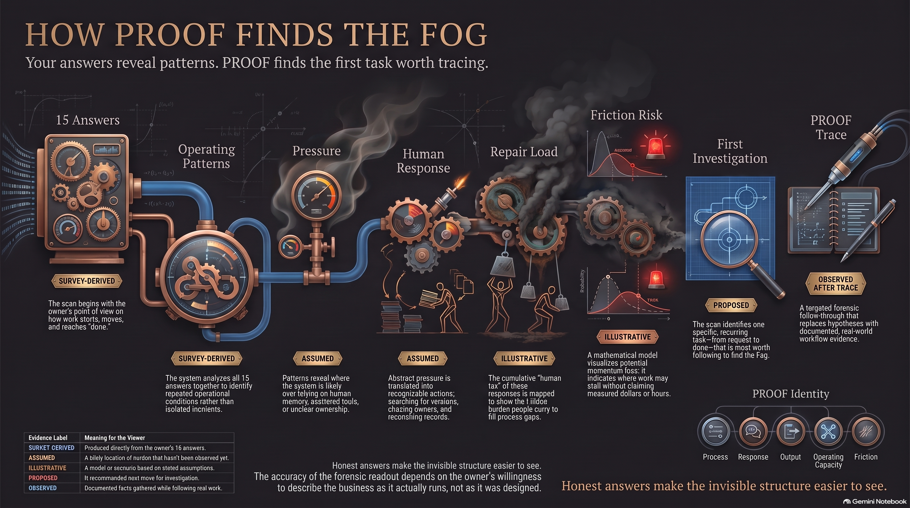

Fog & Friction Finder
15 answers. One place to investigate.

I’m finding the version, remembering the decision, checking the answer and working out who goes next.
That’s useful work to notice. PROOF starts with where it happens, then follows a real task.
I follow a recurring task from request to accepted completion: the people, tools, decisions, waiting and work that keep it moving.
I separate what was reported, what I inferred and what I could actually observe. The result is a specific place to act, with the evidence and gaps still attached.
Trace replaces the AI Infrastructure Assessment. We agree on scope, access, delivery and terms before it begins. The existing Map carries forward into the same case.
This review explains the service. It doesn’t book a Trace or connect operational data.
Once we agree to work together, I turn the findings into the paid BizBlueprint: the changes, infrastructure, owners and checks the work needs.
Then I help put it into use. Completion means checking the agreed flow and recording who owns what happens next.
PROOF → agreed engagement → BizBlueprint → implementation → BBAI completion review → BizBot Mrktng access.
A Map score can’t unlock growth products. The authorized BBAI reviewer must record completion.
I start with the account context to inform the next Reddit step.
I focus on the first steps into relevant Reddit conversations.
I shape a Reddit plan around the account and the contribution it can make.
I review dormant demand and identify where a renewed conversation would be useful.
I define the agent’s job: understand the request, capture the needed context, and route the next action.
CARE, Conversion Architecture Revenue Engine, is the delivery method behind that aim.
I review and record BBAI completion before activating a growth product. The incoming request needs a destination, an owner and a next action.
These are offer previews. Pricing, delivery availability, checkout and account access aren't connected in this local review.
I built DDD around a 20-minute boundary. One surface, a few decisions, one action and a place to pick it up again.
I choose a surface I can see: files, messages, tabs or notes. A boundary gives me somewhere to begin.
I give one item a decision: keep, move, let go or decide later. The log records my decisions; I make the changes in the original app.
I choose one visible action and say what finished looks like. If it won't fit, I shrink the action.
I record where the work lives and what happens next. Tomorrow starts with a place to return to.
The eight-answer Scan describes my starting point. DDD uses it to suggest a starting surface, which I can change. Its score isn't PROOF, a diagnosis or a measure of minutes saved.
DDD records the decisions and actions I enter. The timer records elapsed session time. It doesn't inspect my files, verify completed work or claim a productivity gain.
$7.77 helps someone start.I match it. The De-Fog Family grows.
First month is on me. Each $7.77 contribution funds someone's Digital De-Fog Daily, and I match it. I add another month of DDD access for you, too.
No automatic renewal. No public donor list. No story required.
These links send a real payment to Erik. Payment verification and account access aren't connected yet.
The guided session works here and saves on this device. Payment verification, funded-month tracking and cross-device accounts still need to be connected. Paying isn't required to try this session.
I don't publish donor names or session entries. Payment providers can still show payment details to the recipient and, depending on my settings, other people. I check the provider's privacy settings before sending.
Sponsor matching and private family connections aren't active here. Nothing I write in a DDD session is shared with a sponsor.
I'm documenting the attempt to 10X in the AI era: TBTX, PROOF, agents, purpose, passion and service. Including the parts I haven't figured out.
The questions and guided session need JavaScript.
I start with the work people are already carrying. I trace where the context gets lost, give it a home, and check that the next person can act.
I give the work a clear home so the next person can find what they need.
I write down the purpose, decisions and instructions in plain text that people and tools can read.
I turn agreed, repeatable steps into scripts and check their outputs.
I make ownership, permissions, checks and exceptions explicit.
The Quad Keystones: Folders, Markdown, Scripts, Protocols.
I define the job, what it may change, how I’ll check it, and when it needs a person.
FLOW Agent AS is the internal execution engine for this approach. I use it to structure AI-assisted work around permissions, checks and recorded results.
The agreed client scope determines what gets connected. This page explains the approach; it isn’t a demonstration of a connected client runtime.